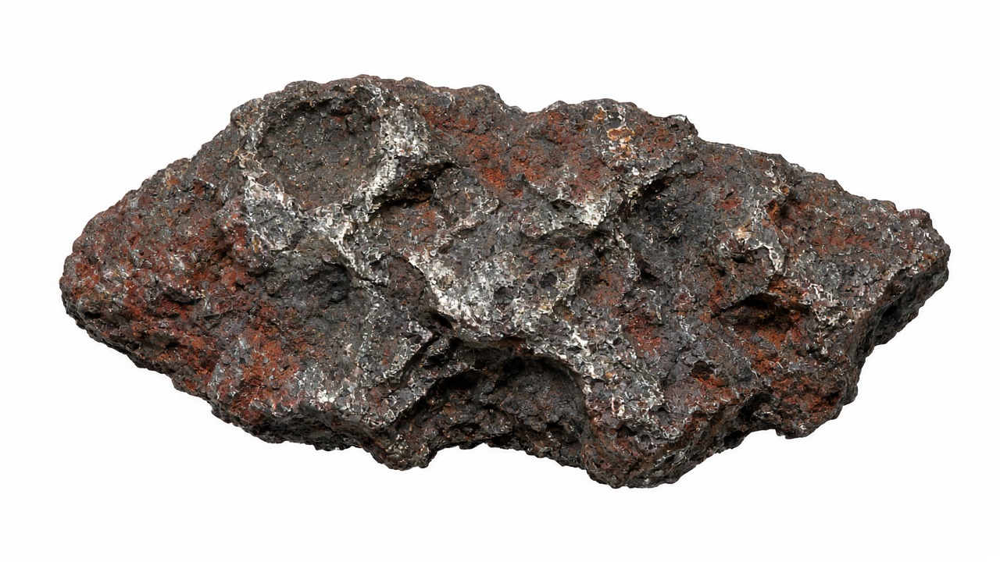
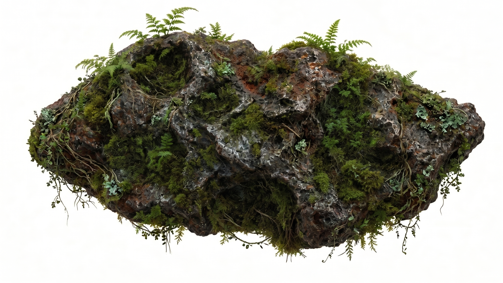

Lifeless matter
Living ecosystems


We restore devastated landscapes, breathing life into sterile environments through advanced ecological terraforming.
SEE IMPACT

We restore devastated landscapes, breathing life into sterile environments through advanced ecological terraforming.
SEE IMPACT